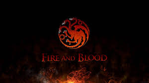
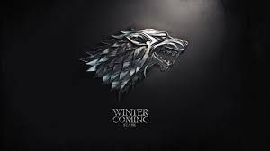
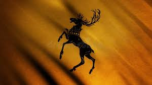

House Targaryen
House Targaryen is one of the most iconic and complex noble families in both Game of Thrones and its source material, A Song of Ice and Fire. Originating from the ancient civilization of Valyria, the Targaryens were one of the few dragonlord families to survive the catastrophic Doom of Valyria. They settled on the island of Dragonstone, where they preserved their traditions, including dragon-riding and a distinct Valyrian appearance—silver-gold hair and violet eyes—traits that set them apart from most of the inhabitants of Westeros.
The rise of House Targaryen to power began with Aegon I Targaryen, who launched a massive campaign known as Aegon's Conquest. With his sister-wives, Visenya Targaryen and Rhaenys Targaryen, and their three dragons, Aegon subdued most of Westeros and established the Iron Throne. This marked the beginning of nearly 300 years of Targaryen rule, during which dragons served as both weapons of war and symbols of divine-like authority. Their dynasty reshaped the political landscape of the Seven Kingdoms, centralizing power in a way never seen before.
However, the same traits that made the Targaryens powerful also contributed to their instability. Their tradition of intermarriage—often between siblings—was meant to preserve their Valyrian bloodline but sometimes led to mental instability, giving rise to the saying, “Every time a Targaryen is born, the gods flip a coin.” This unpredictability is exemplified by rulers like Aerys II Targaryen, whose descent into paranoia and cruelty ultimately led to the downfall of the dynasty during Robert's Rebellion. After his death, the Targaryens lost the throne, and surviving heirs, including Daenerys Targaryen, were forced into exile.

House Stark
House Stark is one of the oldest and most honorable noble families in Game of Thrones and the broader world of A Song of Ice and Fire. They rule the cold, vast region known as the North from their ancestral castle, Winterfell. The Stark family traces its lineage back thousands of years to Bran the Builder, a mythical figure said to have constructed Winterfell and helped build the the Wall. Their ancient bloodline and deep connection to the North give them a strong sense of identity rooted in tradition, resilience, and survival.
The words of House Stark, “Winter is Coming,” reflect more than just a seasonal warning—they symbolize vigilance, preparedness, and the harsh realities of life in the North. Unlike many southern houses, the Starks are known for their strict code of honor, loyalty, and justice. This is best embodied by Eddard Stark, who rules with integrity and a deep sense of duty. However, his rigid morality places him at odds with the political intrigue of King's Landing, where deception and ambition dominate. His downfall during the events leading to War of the Five Kings marks a turning point for both his family and the realm.
After Eddard’s death, House Stark is thrown into chaos, with its members scattered across Westeros and beyond. His children—Robb Stark, Sansa Stark, Arya Stark, Bran Stark, and Rickon Stark—each undergo intense personal journeys shaped by war, betrayal, and survival. Robb rises as a military leader but falls victim to treachery during the Red Wedding, one of the most devastating moments in the series. Meanwhile, Arya and Sansa evolve in drastically different ways—one through vengeance and stealth, the other through political resilience and adaptation.

House Lannister
House Lannister is one of the wealthiest and most politically powerful families in Game of Thrones and the world of A Song of Ice and Fire. They rule the western region known as the Westerlands from their formidable seat, Casterly Rock. Their immense wealth comes from abundant gold mines, which fuels their political influence across Westeros. The Lannister family motto, “Hear Me Roar!”—though less commonly spoken than their unofficial saying, “A Lannister always pays his debts”—reflects their pride, power, and insistence on maintaining dominance at all costs.
The driving force behind House Lannister during the events of Game of Thrones is Tywin Lannister, a calculating and ruthless patriarch who prioritizes legacy and control above all else. Through strategic alliances and decisive military action, Tywin secures the Lannisters’ grip on the Iron Throne, particularly after supporting Robert Baratheon during Robert's Rebellion. His political maneuvering continues during the War of the Five Kings, where he orchestrates key victories—including the infamous Red Wedding—to eliminate rivals and restore Lannister dominance.
Central to the family’s story are Tywin’s three children: Cersei Lannister, Jaime Lannister, and Tyrion Lannister. Cersei is fiercely ambitious and determined to hold power, often resorting to manipulation and cruelty to protect her position and her children. Jaime, once known primarily for killing the Mad King Aerys II Targaryen, undergoes a gradual moral transformation as he struggles with honor and identity. Tyrion, the most intellectually gifted of the siblings, faces prejudice due to his stature but proves himself a skilled السياسي strategist and one of the most complex characters in the series.

House Baratheon
House Baratheon is a powerful noble family in Game of Thrones and the world of A Song of Ice and Fire. Their ancestral seat is Storm's End, located in the storm-lashed region of the Stormlands. The Baratheons trace their lineage back to Orys Baratheon, a rumored half-brother of Aegon I Targaryen, who was granted lands and titles after Aegon's Conquest. Their sigil—a crowned stag—and their words, “Ours is the Fury,” reflect their reputation for strength, aggression, and resilience in battle.
House Baratheon rises to ultimate power with Robert Baratheon, who leads a rebellion against the Targaryen dynasty during Robert's Rebellion. After overthrowing Aerys II Targaryen, Robert claims the Iron Throne and establishes Baratheon rule over Westeros. However, despite his prowess as a warrior, Robert proves to be an ineffective king—more interested in feasting and hunting than governing. His marriage to Cersei Lannister is politically motivated and deeply unhappy, setting the stage for future conflict and instability in the realm.
Following Robert’s death, House Baratheon fractures into rival factions led by his brothers, Stannis Baratheon and Renly Baratheon. Stannis, the elder of the two, is rigid, dutiful, and unyielding in his belief that he is the rightful heir. His alliance with the priestess Melisandre introduces dark magic and the influence of the Lord of Light into his campaign. Renly, by contrast, is charismatic and popular, gaining widespread support despite having a weaker legal claim. Their rivalry becomes a key part of the War of the Five Kings, ultimately weakening the Baratheon cause and contributing to their downfall.
